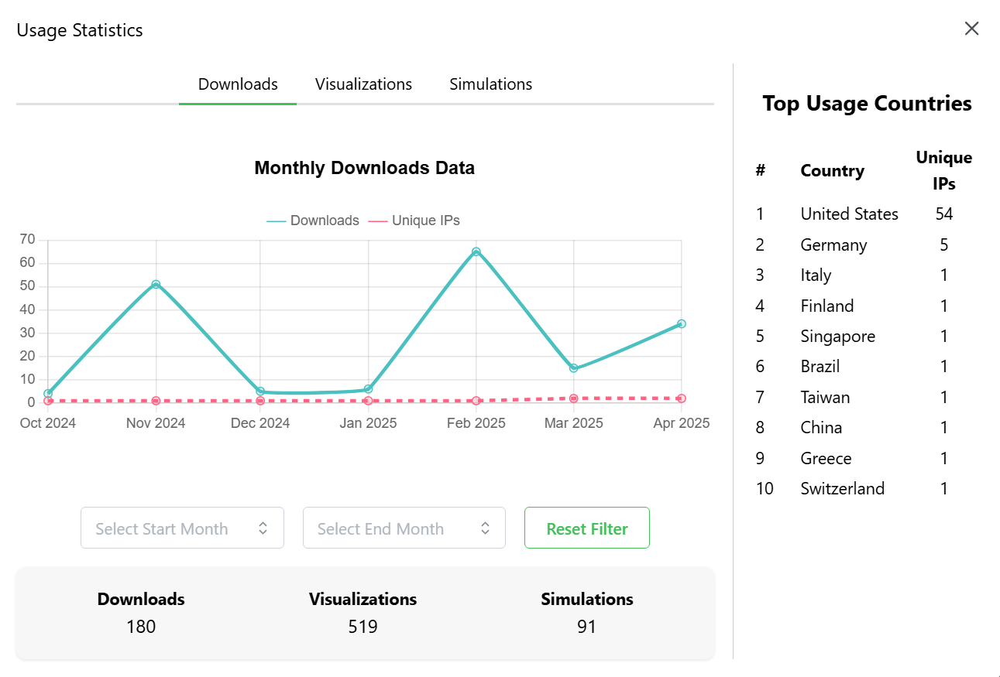
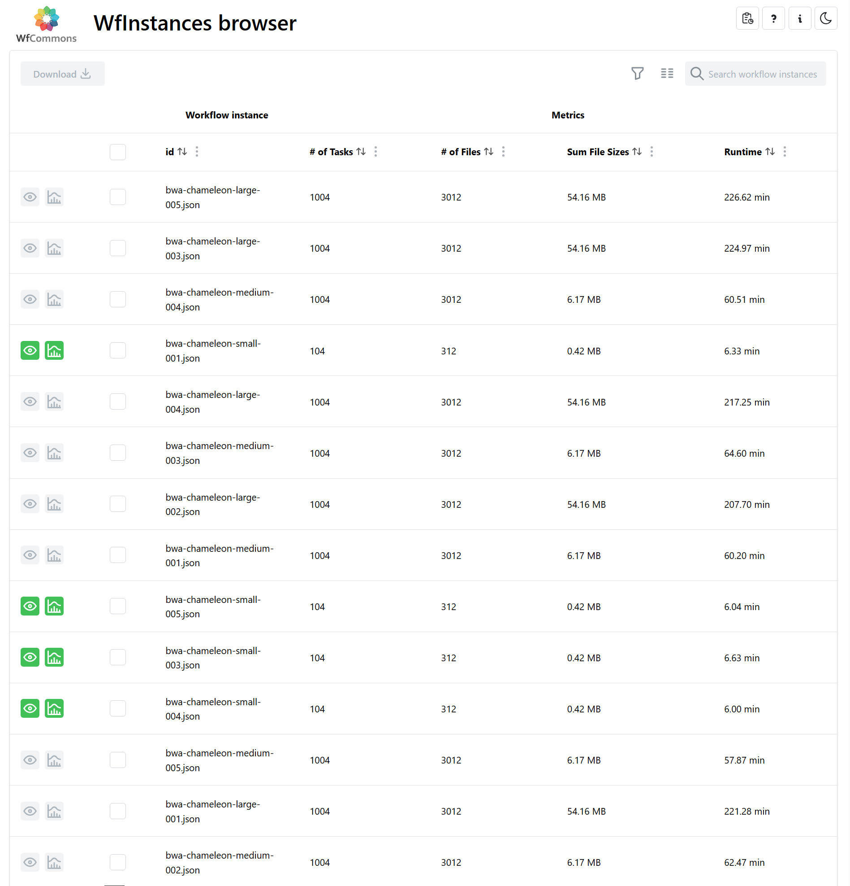

This project was completed as part of ICS 496, my Computer Science capstone course. The goal was to simulate real-world software development, from planning to delivery, in a collaborative team environment.
The WfInstances Browser is a web application that allows researchers to browse, download, simulate, and visualize workflow instances from WfCommons repositories. Our team focused on improving usability and implementing new features.

Usage Report Modal
Interactive visualization of usage metrics (downloads, simulations, visualizations) with customizable date ranges. Includes a sidebar showing the top user countries using IPInfo geolocation.
User Feedback Pop-ups
Occasional questionnaires triggered by user activity to collect usability feedback.

Performance Improvements
Fetch workflow JSON data using Python’s git package instead of the GitHub REST API for better performance.
GitHub Actions Integration
Automated updates of usage statistics displayed directly in the project README.
We showcased our work during ICS Project Day, including a live demo and a poster presentation. This project gave me hands-on experience in full-stack development, real-world problem-solving, and collaborative software engineering.